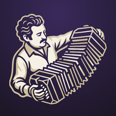
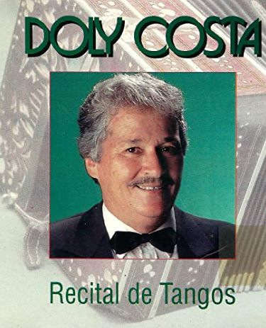

Aprende a tocar el bandoneón con BanDoly
Teclado con sonido real, lecciones y un camino de estudio hecho para ti.


¿Quién es Doly Costa?Bandoneonista gaúcho de 97 años que todavía toca. Pasó por las orquestas de tango de las radios de Porto Alegre y fundó Os Posteiros. Conocer la historiaQué encuentras en BanDoly
Teclado con sonido real
Los 71 botones del bandoneón Rheinische 142 en sus posiciones reales, con el sonido grabado de un bandoneón de 1930. Cada botón toca una nota al abrir el fuelle y otra al cerrarlo.
Abrir el teclado →11 lecciones con cuestionario
Historia del instrumento, sistema bisonoro, fuelle y articulación, lectura en las dos claves, ritmos de tango, acordes y cómo leer una partitura de tango.
Ver las lecciones → Leer las lecciones online → Teoría musical online →Desafíos para memorizar los botones
La app te pide una nota y tú encuentras el botón. El sorteo repite más los botones que fallas, y el mapa de errores muestra dónde practicar.
Hacer un desafío →Escalas y melodías guiadas
Escalas en todas las tonalidades y melodías con una o dos manos, con partitura, la dirección del fuelle sugerida y un modo que espera a que aciertes.
Tocar una melodía →Acordes en el bandoneón
Dónde están los botones de 72 acordes (mayores, menores, con séptima y disminuidos) en todas las tónicas, abriendo y cerrando, en las dos manos.
Ver los acordes →Ritmos del tango
Marcato, síncopa, 3-3-2 y arrastre, con metrónomo y un modo que mide si vas adelantado o atrasado.
Practicar el ritmo →Funciona en el navegador de la computadora y del celular, en portugués, español e inglés. Es gratis, no necesita registro y se puede instalar como app para usarla sin internet.
Sonido: SoundFont Bandoneon V2.5, de Jörg Bleymehl (grabado en un bandoneón ELA de 1930; edición GM de Mike77154), de uso libre. Puedes cambiar al sonido sintetizado en Ajustes.
Consejo: usa auriculares. La app funciona sin conexión y tu progreso queda guardado en este navegador. En Ajustes eliges el sonido, la afinación y haces copias de seguridad.
Preguntas frecuentes
¿Qué es el bandoneón?
Es el instrumento de fuelle y botones que le da voz al tango. Fue creado en Alemania en el siglo XIX y se convirtió en el símbolo del tango de Buenos Aires y Montevideo. Es bisonoro: cada botón toca una nota al abrir el fuelle y otra al cerrarlo.
¿Necesito tener un bandoneón para usar BanDoly?
No. Puedes aprender el mapa de los botones, la lectura y los ritmos solo con el teclado virtual, en la computadora o en el celular. Si tienes un bandoneón, la app también te escucha tocar por el micrófono y comprueba las notas.
¿BanDoly es gratis?
Sí. BanDoly es gratis y no necesita registro. Tu progreso se guarda en el propio navegador, y puedes exportar una copia de seguridad en Ajustes.
Mi estudio
Tu camino, la rutina de hoy y tus récords, en un solo lugar.
Tu camino
Del primer botón al tango
Tus récords
Rutina de hoy
Lecciones
11 lecciones cortas con quiz, del primer contacto con el instrumento hasta la partitura de tango.
Teoría musical
Lo básico para leer partitura y entender los ejercicios: notas, pentagrama, figuras, compás, escalas y acordes. Todo con sonido.
Teclado
Los 71 botones con sonido real. Toca, cambia el fuelle y mira cómo cada botón cambia de nota.
Consejo: gira el celular para tocar con más espacio, o mira una mano por vez.
Desafíos
Rondas rápidas para memorizar los botones y practicar la lectura.
Encuentra la nota
La app muestra una nota y la dirección del fuelle. Encuentra el botón correcto. Diez rondas; después de dos errores aparece una pista.
Durante el desafío los nombres de los botones se ocultan.
Melodías
Escucha, toca en el modo Espera y después a tiempo. También hay escalas guiadas e importación de partituras.
El botón con borde dorado es el próximo a tocar. El color de cada nota muestra la dirección sugerida del fuelle: abriendo cerrando. Cambia la dirección con Espacio o marca "Fuelle automático".
Acordes
Dónde están los botones de cada acorde, abriendo y cerrando, en las dos manos.
En el bandoneón cada acorde se aprende dos veces, abriendo y cerrando, con botones diferentes. Las opciones son las posiciones más compactas del mapa, con el bajo en la tónica primero. "Inversión" significa otra nota del acorde en el bajo.
RepeTCHÊ
El bandoneón toca, tú repites. En cada ronda la música crece, hasta que la tocas toda de oído.
Elige la música
Toca una música para empezar. Viene en tramos cortos, y el fuelle cambia de dirección solo: presta atención a los botones.
¡Música completa!
¡Nuevo récord!
Ritmo
Los acompañamientos del tango, con metrónomo y el modo toca junto.
Ritmos del tango
Toca junto
Con el patrón sonando, golpea el botón de abajo (o presiona Espacio) junto con cada acento. La app mide si vas adelantado o atrasado.
Academia de Bandoneón
Ejercicios en 6 niveles, del primer botón a canciones con las dos manos, y un nivel para tus propias partituras. El instructor muestra la nota, la mano, el dedo y la dirección del fuelle de cada momento, y al final recibes un informe con lo que acertaste y lo que debes repasar.
Tengo la partitura en PDF o en foto
La app lee archivos de partitura digital, no imágenes. Para convertir un PDF o una foto:
- Instala MuseScore 4 (gratis) desde musescore.org.
- Usa Archivo → Importar PDF. La conversión la hace el sitio musescore.com y pide una cuenta gratuita.
- Revisa las notas en la partitura convertida: la lectura automática puede equivocarse.
- Usa Archivo → Exportar → MusicXML e importa el archivo aquí.
Usa partituras de dominio público o que tengas derecho a usar.
Bandoneón real
Toca tu instrumento: la app escucha por el micrófono, muestra la nota y enciende el botón que da esa nota.
Para que la app escuche bien
- Ponte en un lugar silencioso y usa "Calibrar el silencio" antes de empezar: la app mide el ruido del ambiente durante dos segundos.
- Deja el celular o la computadora a medio metro del instrumento.
- Toca una nota por vez y sostenla medio segundo.
- El bandoneón suena dos lengüetas en octava, así que la app acepta la nota correcta en cualquiera de las dos octavas.
¿Funcionó aquí? Marca "Micrófono" en la Academia o "Usar micrófono" en Melodías para que la app compruebe los ejercicios.
Logros
Insignias que ganas practicando. Compártelas con tus amigos.
Para profesores
Envía una tarea a tu alumno en tres pasos
El alumno abre el enlace y encuentra el ejercicio listo, con tu mensaje. Al final, te envía el informe. Sin registro, sin costo y sin servidor.
Elige el ejercicio
Todos los ejercicios de la Academia y tus partituras.
Ajusta la práctica
El modo y la velocidad con que el alumno va a empezar.
Escribe al alumno
Tu nombre y un mensaje corto aparecen en el aviso de la tarea.
Cómo funciona
- Envías el enlacePor WhatsApp, correo o como prefieras.
- El alumno abre y practicaEl ejercicio aparece listo en la Academia, con tu mensaje.
- Recibes el informeNotas correctas, ritmo, fuelle y los pasajes para repasar.
- La digitación va juntoEn "Editar digitación", en la Academia, elige el dedo de cada nota.
Las partituras propias (Mis partituras) también pueden ir en el enlace: el alumno recibe la música ya transcrita a los botones. Nada pasa por un servidor: todo va dentro del propio enlace.
Ajustes
Sonido, afinación, nombres de las notas y tus datos.
Sonido y notas
Habla con nosotros
¿Encontraste un error o tienes una idea para BanDoly? Tu mensaje ayuda a mejorar la app.
Tus datos
El progreso, las melodías creadas y el mapa de botones se guardan solo en este navegador. Haz una copia de seguridad para no perder nada al limpiar el navegador o para llevar todo a otro dispositivo.
Mapa de botones
La app usa el mapa Rheinische 142. Si algún botón de tu instrumento es diferente, ajústalo en Teclado → Editar mapa.